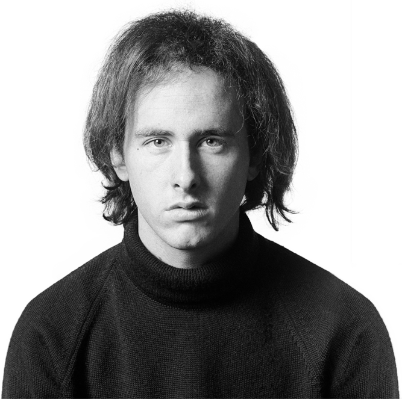

JIM MORRISON
Singer for The Doors
At the center of The Doors’ mystique is the magnetic presence of
singer-poet Jim Morrison, the leather-clad “Lizard King” who brought
the riveting power of a shaman to the microphone. Morrison was a
film student at UCLA when he met keyboardist Ray Manzarek on Venice
Beach in 1965. Upon hearing Morrison’s poetry, Manzarek immediately
suggested they form a band; the singer took the group’s name from
Aldous Huxley’s infamous psychedelic memoir, “The Doors of
Perception.”
RAY MANZAREK
Keyboardist for The Doors
Ray Manzarek was the architect of The Doors’ intoxicating keyboard
sound. Manzarek’s evocative playing fused rock, jazz, blues, bossa
nova and an array of other styles into something utterly, dazzlingly
new.
JOHN DENSMORE
Drummer for The Doors
Drummer John Densmore was far more than merely the rhythmic engine
of The Doors. Strongly influenced by jazz skinsmen like Elvin Jones
and the supple grooves of the Brazilian wave, he brought a highly
evolved sense of dynamics, structure and musicality to his beats.

ROBBY KRIEGER
Guitarist for The Doors
With a flair for wicked bottleneck slide, exploratory solos and
gutbucket grooves, guitarist Robby Krieger brought a stinging,
sinuous intensity to the sound of The Doors. But he was also a key
songwriter in the band and penned some of their biggest hits –
notably their mesmerizing #1 hit, “Light My Fire.”